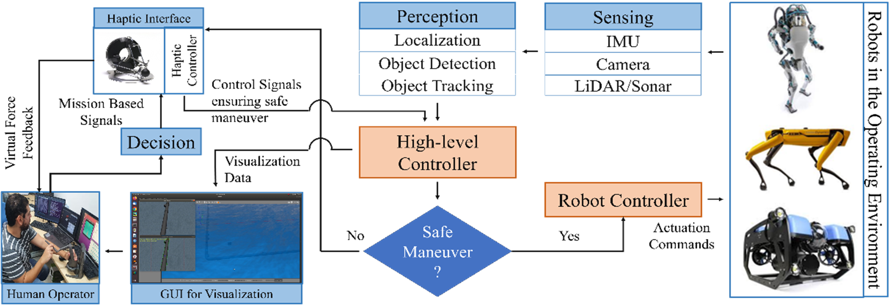
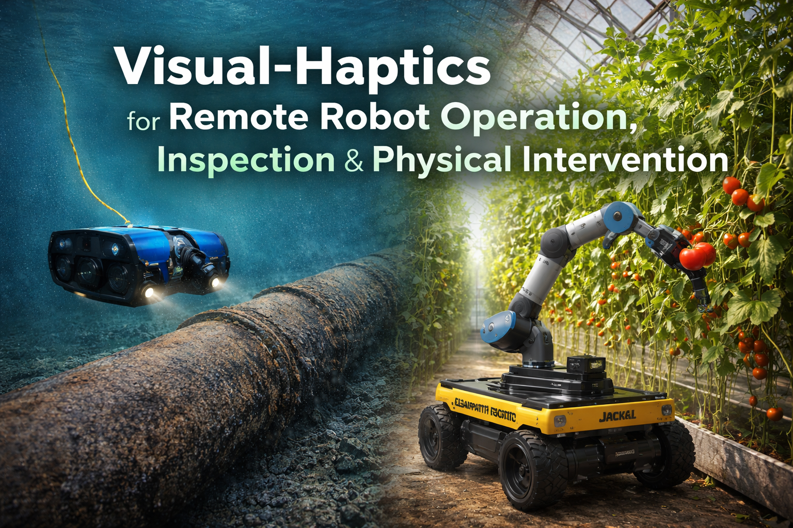

System Architecture
High-level overview of the visual-haptic teleoperation stack, including sensing, feedback, XR interaction, and safety control.
Visual assets documenting the system architecture, robotic platforms, experimental setups, and validation activities.

High-level overview of the visual-haptic teleoperation stack, including sensing, feedback, XR interaction, and safety control.

Representative robotic platforms, haptic devices, and operator workstations used for project development and validation.

Scenario-based demonstrations in greenhouse and underwater environments to assess transferability and deployment readiness.

Recorded demonstrations of navigation, inspection, and intervention tasks will be published here as validation progresses.